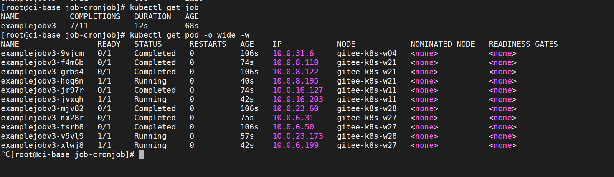
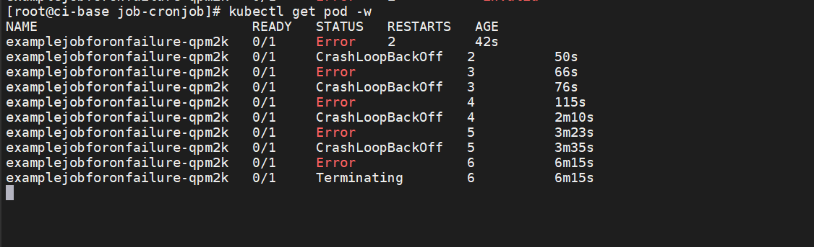
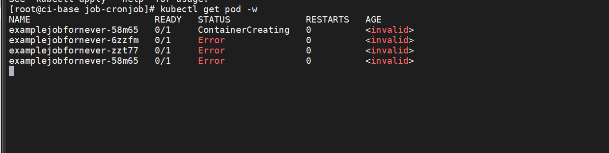
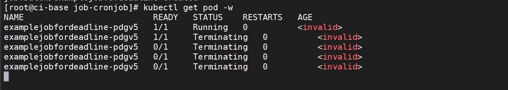

Contents
Job与CronJob控制器¶
Kubernetes中还有一种叫作Job的工作负载对象，它基于某一特定任务而运行。
当运行任务的容器完成工作后，就会成功退出。
如果需要执行一次性任务，而非提供连续的服务，Job就非常适合。
CronJob控制器其实就是在Job的基础上加上了时间调度，可以在给定的时间点运行一个任务，也可以定期地运行。
这个控制器实际上和Linux系统中的crontab命令非常类似。
1.Job控制器的基本操作¶
Job控制器可以执行3种类型的任务。
一次性任务：通常只会启动一个Pod（除非Pod失败）。一旦Pod成功终止，Job就算完成了。
串行式任务：连续、多次地执行某一任务。当上一个任务完成时，接着执行下一个任务，直到全部任务执行完，可以通过spec.completions属性指定执行次数。
并行式任务：同一时间并发多次执行任务。可以通过 spec.parallelism指定并发数，也可以配合 spec.completions属性指定总任务的执行次数。
1.1. Job yaml模板¶
apiVersion: batch/v1 #必填，版本号
kind: Job # 必填，资源类型
metadata: # 必填，元数据
name: <name>-job # 必填，资源名称
namespace: test # pod所属的命名空间
labels: # 自定义标签
name: string #自定义标签名字<key: value>
spec: # 必填，部署的详细定义
completions: int # 资源重复作业数，默认值: 1
parallelism: int # 资源并行作业数，默认值: 1
backoffLimit: int # 资源失败重试次数，默认值：6
activeDeadlineSecond: int # 资源作业超时时间，默认0 永不超时
ttlSecondsAfterFinished: int # 任务执行完，多少秒自动删除，默认300
template: # 必填，应用容器模板定义
spec:
containers: #此处参考pod的containers
- name: busybox
image: busybox:latest
imagePullPolicy: IfNotPresent
command: ["echo", "hello world"]
restartPolicy: Never # job类型资源重启策略必须为Never或者OnFailure
yaml示例：以busybox镜像启动，输出hello world举例。记得将重启策略设置为Never或者OnFailure
apiVersion: batch/v1
kind: Job
metadata:
name: hello-job
namespace: test
labels:
name: hello-job
spec:
template:
spec:
containers:
- name: busybox
image: busybox:latest
imagePullPolicy: IfNotPresent
command: ["echo", "hello world"]
restartPolicy: Never
1.1 一次性任务¶
examplejobv1.yml
apiVersion: batch/v1
kind: Job
metadata:
name: examplejobv1
spec:
template:
spec:
restartPolicy: Never
containers:
- name: examplejobcontainer
image: busybox
imagePullPolicy: IfNotPresent
command: ['sh', '-c']
args: ['echo "Start Job!"; sleep 30; echo "Job Done!"']
该模板的含义如下。
apiVersion表示使用的API版本，Job位于batch/v1中，v1表示使用Kubernetes API的稳定版本。
kind表示要创建的资源对象，这里使用关键字Job。
metadata表示该资源对象的元数据。一个资源对象可拥有多个元数据，其中一项是name，它表示当前资源的名称。
spec表示该资源对象的具体设置。
template：Pod模板，具体的模板定义。这里创建了一个Pod，Pod启动后会执行一连串命令，刚开始会输出 “Start Job!”，然后休眠30s（假设在处理任务），任务完成后输出“Job Done!”。
接下来，运行以下命令，通过模板创建Job。
$ kubectl apply -f examplejobv1.yml
现在，Job开始运行。可以通过以下命令查看Job的运行状态， COMPLETIONS表示执行进度，DURATION表示当前Job的执行时间。
$ kubectl get job
NAME COMPLETIONS DURATION AGE
examplejobv1 1/1 32s 0s
此时通过$ kubectl get pod -o wide命令可以看到已经创建了一个对应于Job的Pod，且它处于运行完成状态
kubectl get pod -o wide
NAME READY STATUS RESTARTS AGE IP NODE NOMINATED NODE READINESS GATES
examplejobv1-vnw6j 0/1 Completed 0 2m18s 10.0.23.57 gitee-k8s-w28 <none> <none>
这个Job会执行30s，待Job执行完毕后再通过各个命令查看其状态。可以发现已经发生了变化。
Job状态中的COMPLETIONS变为1/1，表示全部执行完成；DURATION表示Job总共执行了32s；
而Pod状态变为Completed；因为不再运行；所以READY变为0/1。
最后查看日志，发现结束日志“Job Done!”已输出到控制台
$ kubectl logs pod/examplejobv1-vnw6j
Start Job!
Job Done!
执行完毕后，可以通过$ kubectl delete job examplejobv1命令将Job删除。
$ kubectl delete job examplejobv1
job.batch "examplejobv1" deleted
注意：Job执行完成后是不会自动删除的。执行后保留它有一定好处，如用于查看执行日志，或者在出现问题时了解Pod所处的状态。
但坏处在于，如果执行次数越多，并且不删除，则这种垃圾式的残留 Job也会越多，人工删除会略显麻烦。有没有自动删除的办法呢？
答案是肯定的。只需要修改yml文件，加上一个spec.ttlSecondsAfterFinished属性，该属性用于确定在所有任务执行完成后，需要等待多少秒才可删除Job。
apiVersion: batch/v1
kind: Job
metadata:
name: examplejobv1
spec:
template:
spec:
automountServiceAccountToken: 30
restartPolicy: Never
containers:
- name: examplejobcontainer
image: busybox
imagePullPolicy: IfNotPresent
command: ['sh', '-c']
args: ['echo "Start Job!"; sleep 30; echo "Job Done!"']
这个功能默认是关闭的，需要手动开启，修改的组件包括apiserver、controller和scheduler。
直接修改/etc/kubernetes/manifests下面对应的3个同名的.yaml静态文件，加入 —feature-gates=TTLAfterFinished=true命 令，然后令对应的Pod重新运行即可。
例如，修改后kube-scheduler.yaml的spec部分如下，对于kube-apiserver.yaml和kube-controller- manager.yaml，也在spec部分加入- --feature-gates=TTLAfterFinished=true即可。
apiVersion: v1
...
spec:
containers:
- command:
- kube-scheduler
- --address=127.0.0.1
- --kubeconfig=/etc/Kubernetes/scheduler.conf
- --leader-elect=true
- --feature-gates=TTLAfterFinished=true
...
1.2 串行式任务¶
串行式任务可以连续、多次地执行某一任务。
当上一个任务完成时，接着执行下一个任务，直到全部任务执行完。
可以通过spec.completions属性来指定执行次数。
examplejobv2.yml
这里，通过定义spec.completions，我们将这个任务的执行次数设置为5。
apiVersion: batch/v1
kind: Job
metadata:
name: examplejobv2
spec:
completions: 5
template:
spec:
restartPolicy: Never
containers:
- name: examplejobcontainer
image: busybox
imagePullPolicy: IfNotPresent
command: ['sh', '-c']
args: ['echo "Start Job!"; sleep 30; echo "Job Done!"']
接下来，运行以下命令，通过模板创建Job。
$ kubectl apply -f examplejobv2.yml
这5个Pod会依次创建，执行完上一个Pod，才会创建并执行下一个Pod，同时只能有一个处于Running（或ContainerCreating）状态的Pod
$ kubectl get pod -o wide
NAME READY STATUS RESTARTS AGE IP NODE NOMINATED NODE READINESS GATES
examplejobv2-6mbqr 0/1 Completed 0 50s 10.0.6.186 gitee-k8s-w27 <none> <none>
examplejobv2-h4vzz 0/1 Completed 0 <invalid> 10.0.6.103 gitee-k8s-w27 <none> <none>
examplejobv2-l9xwx 1/1 Running 0 <invalid> 10.0.6.228 gitee-k8s-w27 <none> <none>
examplejobv2-ltchr 0/1 Completed 0 16s 10.0.6.170 gitee-k8s-w27 <none> <none>
Job的进度也会跟随Pod的执行情况动态变化
$ kubectl get jobs
NAME COMPLETIONS DURATION AGE
examplejobv2 3/5 2m9s 3m5s
这里也可以看出，Job的执行是不会区分机器的。与Deployment控制器一样，Job会根据调度规则动态分配到各个Node上并执行.
kubectl get pod -o wide
NAME READY STATUS RESTARTS AGE IP NODE NOMINATED NODE READINESS GATES
examplejobv2-6mbqr 0/1 Completed 0 3m17s 10.0.6.186 gitee-k8s-w27 <none> <none>
examplejobv2-h4vzz 0/1 Completed 0 2m11s 10.0.6.103 gitee-k8s-w27 <none> <none>
examplejobv2-l9xwx 0/1 Completed 0 99s 10.0.6.228 gitee-k8s-w27 <none> <none>
examplejobv2-ltchr 0/1 Completed 0 2m43s 10.0.6.170 gitee-k8s-w27 <none> <none>
examplejobv2-vwbzd 0/1 Completed 0 66s 10.0.6.66 gitee-k8s-w27 <none> <none>
[root@ci-base job-cronjob]# kubectl get jobs
NAME COMPLETIONS DURATION AGE
examplejobv2 5/5 2m43s 3m19s
1.3 并行式任务¶
当任务比较多时（比如执行几十甚至上百次），串行式任务就不太合适了。
此时可以将其设定为并行式任务，同一时间并发多次执行任务。可以通过spec.parallelism指定并发数，也可以配合 spec.completions属性来指定总任务的执行次数。
examplejobv3.yml
通过定义spec.completions，我们将这个任务设置为执行11次，并行数为4。
apiVersion: batch/v1
kind: Job
metadata:
name: examplejobv3
spec:
completions: 11
parallelism: 4
template:
spec:
restartPolicy: Never
containers:
- name: examplejobcontainer
image: busybox
imagePullPolicy: IfNotPresent
command: ['sh', '-c']
args: ['echo "Start Job!"; sleep 30; echo "Job Done!"']
运行以下命令，通过模板创建Pod。
$ kubectl apply -f examplejobv3.yml
一开始会创建4个Pod并同时运行，然后待某一Pod运行结束后，继续创建后续的Pod，保持4个Pod同时处于Running（或 ContainerCreating）状态，直到达到设置的执行总数（11个）。

2. Job的异常处理¶
因为不同于需要持续提供服务的Pod，Job中的Pod在正常完成任务后，需要及时退出，所以Pod模板中restartPolicy字段的值可以为 Always、OnFailure和Never。
但在Job中，该字段的值只能是OnFailure和Never中的一个。
这里，我们将故意产生错误，看看restartPolicy字段分别设置为OnFailure和Never会有什么区别。
2.1 OnFailure¶
examplejobforonfailure.yml
apiVersion: batch/v1
kind: Job
metadata:
name: examplejobforonfailure
spec:
backoffLimit: 6
template:
spec:
restartPolicy: OnFailure
containers:
- name: examplejobcontainer
image: busybox
imagePullPolicy: IfNotPresent
command: ['sh', '-c']
args: ['this is error command!!']
backoffLimit属性表示重试次数的上限，默认为6次。这里的设置和默认值一样，不写也可以，之所以写出来是为了让读者明确地 知道这个属性正在起作用。在这个例子里，我们输入一条错误的命令“args: [‘this is error command!!’]”，以便让执行失败。
$ kubectl apply -f examplejobforonfailure.yml
通过$ kubectl get pod命令可以看到这个Pod一直处于失败状态（CrashLoop
BackOff），然后不断重启，RESTARTS的值不断累加
之前已经提到过Pod失败时的递增延迟重启策略，它将会以递增延迟方式尝试重新启动（10s，20s，40s，…），上限时间为6min。当延迟增加到了6min后，就相当于要再等6min才会重启。
Job模板中的属性spec.backoffLimit表示重试次数的上限，默认为6次。如果6次以内没有出现失败，则会重置计数。但如果达到 重试次数的上限，则这个Job对应的容器将会被终止并删除。

2.2 Never¶
然后，再来看看restartPolicy字段设置为Never会发生什么事情。
examplejobfornever.yml
apiVersion: batch/v1
kind: Job
metadata:
name: examplejobfornever
spec:
backoffLimit: 6
template:
spec:
restartPolicy: Never
containers:
- name: examplejobcontainer
image: busybox
imagePullPolicy: IfNotPresent
command: ['sh', '-c']
args: ['this is error command!!']
运行以下命令，通过模板创建Pod。
$ kubectl apply -f examplejobfornever.yml
可以看到，因为Pod不会重新启动（restartPolicy字段设置为Never），且Job的任务并没有成功执行，所以Job会不停地创建新 Pod，直到Pod成功执行。

相对于OnFailure，推荐使用Never，因为OnFailure在重试一定次数后会删除Pod，导致日志或Pod中记录的其他信息丢失，不利于排查 问题。而Never会保留每次Pod启动后的现场，使排查问题更加容易。
除了上述明显的异常处理（如执行失败、执行中断等）之外，Job的执行过程中还有一类很难以察觉的异常。比如，任务中出现死循环，表现为一直卡在那里一动不动，看起来一直处于Running状态，但怎么执行都不会有结果。
2.3 超时时间¶
对于这类异常，Job模板提供了spec.activeDeadlineSeconds属性，指定执行任务的上限时间（单位为秒）。
如果超过这个时间上限，任务将强制终止并删除,防止程序一直死循环或者假死。
examplejobfordeadline.yml
apiVersion: batch/v1
kind: Job
metadata:
name: examplejobfordeadline
spec:
activeDeadlineSeconds: 10
template:
spec:
restartPolicy: Never
containers:
- name: examplejobcontainer
image: busybox
imagePullPolicy: IfNotPresent
command: ['sh', '-c']
args: ['echo "Hello Kubernetes!"; sleep 3600']
这里将上限时间设置为10s，但在命令里面设置了长时间休眠，让这个任务持续执行3600s。
运行以下命令，通过模板创建Pod。
$ kubectl apply -f examplejobfordeadline.yml
可以看到，因为有运行时间限制，所以在最开始的10s内，Pod处于运行状态，10s后Pod就被终止，直到最后被删除（不管 restartPolicy字段设置为Never还是OnFailure）

3.CronJob控制器的基本操作¶
CronJob控制器是比Job更高级的资源对象。CronJob控制器基于Job，并且添加了时间管理功能。通过CronJob控制器，可以实现以下 类型的Job。
在未来的某个指定时间运行一次Job，例如，某项临时任务。
周期性地运行Job，例如，定期备份、发送邮件等。
3.1 CronJob控制器 yaml模板¶
apiVersion: batch/v1 #必填，版本号
kind: Job # 必填，资源类型
metadata: # 必填，元数据
name: <name>-cj # 必填，资源名称
namespace: test # pod所属的命名空间
labels: # 自定义标签
name: string #自定义标签名字<key: value>
spec: # 必填，部署的详细定义
schedule: "* * * * *" # 必填，运行时间点
concurrencyPolicy: [Allow 允许|Forbid 禁止|Replace 替换] # 并发执行策略，默认允许
failedJobHistoryLimit: int # 为失败的任务执行保留的历史记录数，默认为1
successfulJobsHistoryLimit: int # 为成功的任务执行保留的历史记录数，默认为3。
startingDeadlineSeconds: int # 因各种原因缺乏执行作业的时间点所导致的启动作业错误的超时时长，会被记入错误历史记录。
suspend: boolean # 是否挂起后续的任务执行，默认为false，对运行中的作业不会产生影响。
jobTemplate: # 控制器模板，与template类似
metedata:
labels: # 自定义标签
name: string #自定义标签名字<key: value>
spec:
template: # 必填，应用容器模板定义
spec:
containers: #此处参考pod的containers
- name: busybox
image: busybox:latest
imagePullPolicy: IfNotPresent
command: ["echo", "hello world"]
restartPolicy: Never # job类型资源重启策略必须为Never或者OnFailure
yaml示例：以busybox镜像启动，输出hello world举例。记得将重启策略设置为Never或者OnFailure
apiVersion: batch/v1beta1
kind: CronJob
metadata:
name: hello-cj
namespace: test
labels:
app: hello-cronjob
spec:
schedule: "*/2 * * * *"
jobTemplate:
metadata:
labels:
app: hello-cronjob
spec:
template:
spec:
containers:
- name: busybox
image: busybox:latest
imagePullPolicy: IfNotPresent
command: ["echo", "hello world"]
restartPolicy: Never
examplecronjob.yml
apiVersion: batch/v1beta1
kind: CronJob
metadata:
name: examplecronjob
spec:
schedule: "*/1 * * * *"
jobTemplate:
spec:
template:
spec:
restartPolicy: Never
containers:
- name: examplejobcontainer
image: busybox
imagePullPolicy: IfNotPresent
command: ['sh', '-c']
args: ['echo "Start Job!"; sleep 30; echo "Job Done!"']
CronJob控制器目前只存在于beta1版本中。CronJob控制器模板中的jobTemplate必须填入Job模板，这里引用了之前示例中的Job模板。 CronJob控制器的schedule设置为”/1 “，表示每隔1min执行一次。schedule的设置规则类似于crontable的用法*
注意：schedule给定的间隔一般不应少于该Job的执行时间。如果当前Job尚未结束，且达到触发时间，则会根据concurrencyPolicy 中的设置决定并发策略，而它的默认值是Allow（允许并发运行Job）。
一般情况下问题不大，但如果这种情况大量出现，就会有大量Job叠加启动，并发访问系统资源，可能导致系统响应变慢甚至崩溃。
运行以下命令，通过模板创建CronJob控制器。
$ kubectl apply -f examplecronjob.yml
通过以下命令，可以查看当前正在运行的CronJob控制器。
$ kubectl get cronjob
可以看到，CronJob控制器已创建。接着对应的Job和Job下的Pod也开始进行创建，任务开始执行
$ kubectl get cronjob
NAME SCHEDULE SUSPEND ACTIVE LAST SCHEDULE AGE
examplecronjob */1 * * * * False 1 <invalid> 36s
$ kubectl get job
NAME COMPLETIONS DURATION AGE
examplecronjob-27496001 0/1 81s 81s
$ kubectl get pods
NAME READY STATUS RESTARTS AGE
examplecronjob-27496001-s97d6 0/1 Completed 0 50s
因为之前设置的是每分钟执行一次，所以在接下来的一分钟，CronJob控制器会创建一个新的Job，并执行这个新任务
$ kubectl get cronjob
NAME SCHEDULE SUSPEND ACTIVE LAST SCHEDULE AGE
examplecronjob */1 * * * * False 0 90s 4m19s
$ kubectl get job
NAME COMPLETIONS DURATION AGE
examplecronjob-27496001 1/1 49s 2m4s
examplecronjob-27496002 1/1 32s 64s
examplecronjob-27496003 1/1 33s 4s
$ kubectl get pods
NAME READY STATUS RESTARTS AGE
examplecronjob-27496001-s97d6 0/1 Completed 0 3m40s
examplecronjob-27496002-5qh7d 0/1 Completed 0 2m40s
examplecronjob-27496003-w9vv8 0/1 Completed 0 100s
由于spec.successfulJobsHistoryLimit属性默认为3，因此这个CronJob控制器最多只保留最近3条执行成功的Job历史记录。
可以通过以下命令删除CronJob控制器。
kubectl delete cronjob {CronJob名称}
执行删除命令之后，CronJob控制器下的所有Job和Pod都会被删除，正在运行的Pod会被强制终止
$ kubectl delete cronjob examplecronjob